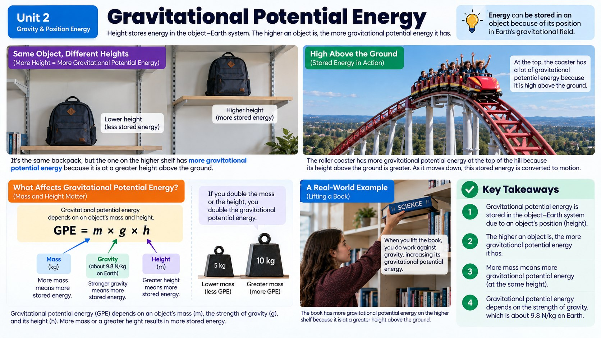

Why does a roller coaster cart parked at the top of a 200-foot hill feel so much more dangerous than the same cart sitting on flat ground? The answer is energy you can't even see yet.

Energy That's Just Waiting Around
Not all energy is busy doing something. Some energy just sits and waits, stored up until the right moment to be released. Scientists call this stored energy potential energy, and one of the most common kinds comes from an object's position above the ground. A book balanced on the edge of a shelf, a diver standing on a high platform, and a roller coaster cart clicking its way up the first big hill all have this in common: they're loaded with energy they haven't used yet.
This particular type of stored energy is called gravitational potential energy, or GPE for short. It exists because gravity is always ready to pull things back down toward Earth. The moment something falls, drops, or rolls downhill, that waiting energy gets put to work.
Height Is the Key Ingredient
So what actually decides how much gravitational potential energy an object has? Distance above the ground is the big one. The higher an object sits, the farther gravity has to pull it, and the more energy is packed into that position. A cart sitting at the very top of a 200-foot hill has way more GPE than the same cart halfway down, and a book on a top shelf has more GPE than a book on the floor.
Mass matters too. A bowling ball sitting on a shelf has more gravitational potential energy than a tennis ball sitting on the exact same shelf, because there's simply more "stuff" for gravity to act on. So gravitational potential energy depends on two things working together: how much mass the object has, and how high above the ground it sits. Change either one, and the stored energy changes with it.
This relationship also works in a clean, predictable way. If you double an object's height while keeping its mass the same, its gravitational potential energy doubles right along with it. Triple the height, and the GPE triples too. Mass behaves the exact same way: double the mass at a fixed height, and GPE doubles again. Height and mass both push GPE up in this same straight-line fashion, which is actually different from what you'll see later on when you study kinetic energy and speed, where doubling one ingredient does something far more dramatic to the total energy.
Spotting GPE in the Real World
Once you start looking for gravitational potential energy, you'll notice it everywhere. Water held behind a dam is loaded with GPE, which is exactly why dams can spin turbines and generate electricity when that water is released downward. A pole vaulter at the top of their jump, a kid at the top of a playground slide, and an apple hanging on a high branch are all storing energy in the same basic way.
Engineers who design roller coasters use this idea on purpose. They build the very first hill as the tallest point on the entire ride, because that's where the cart needs to store the maximum amount of gravitational potential energy. Every hill after that is a little shorter, since the ride is slowly spending the energy that was banked at the top.
Where Do We Measure From?
Here's a detail that trips people up: gravitational potential energy is always measured relative to some starting point, usually the ground or whatever surface an object could fall onto. A cart at the top of a hill has GPE compared to the ground below it, but if that same cart could fall into a canyon underneath the track, it would have even more GPE relative to the canyon floor.
This is why the same object can be described as having different amounts of GPE depending on what it's being compared to. The important habit to build is always asking, "Higher than what?" before deciding how much stored energy an object really has.
Putting a Number on It
Scientists have a compact way to describe everything you've just learned in a single formula: gravitational potential energy equals mass times the strength of gravity times height, or GPE = m x g x h. Near Earth's surface, the strength of gravity (g) is about 9.8 meters per second every second. So a 2-kilogram backpack sitting on a shelf 1.5 meters above the floor stores about 2 x 9.8 x 1.5, or roughly 29 Joules, of gravitational potential energy. Move that same backpack up to a shelf 3 meters high, and the GPE roughly doubles to about 59 Joules, exactly matching the proportional pattern you already know.
One common mix-up is thinking that the path an object takes matters, as if a ball rolled up a long, winding ramp to a shelf somehow gains more GPE than one lifted straight up to that exact same shelf. It doesn't. Gravitational potential energy only cares about the vertical height above the reference point, not the distance actually traveled to get there. A hiker who zigzags up a switchback trail to the top of a 500-meter hill ends up with exactly the same GPE as a hiker who could somehow float straight up the cliff face, because both hikers end up 500 meters higher than where they started.
What Energy Actually Is
This chapter keeps using the word energy, so it is worth pinning down. Energy is the ability to cause change. That definition sounds almost too simple, but it is the one scientists actually use, and it has a handy side effect: any time you see something change, you are watching energy get transferred from one object to another.
Look around and the transfers are everywhere. You hear a footstep because energy moves from a shoe hitting the floor into the air and then into your ears. Leaves move because energy in the wind transfers into them. A patch of desk gets warm because energy from sunlight transfers into the wood. Nothing changes anywhere without energy moving somewhere, which is why energy is one of the few ideas that shows up in every single unit of this book.
That also explains the word "potential" in gravitational potential energy. A glass of water sitting on the table has no kinetic energy at all, because it is not moving. But nudge it off the edge and it suddenly has plenty. The energy did not appear from nowhere; it was stored the whole time because of where the glass was sitting. Potential energy is energy stored because of position, and raising the glass higher stores more of it, exactly as this chapter has been saying.
The Other Forms Energy Takes
Gravitational potential energy is one member of a much bigger family. Food, sunlight, and wind all carry energy, but they clearly are not the same thing, because energy comes in several forms and moves between them constantly.
Thermal energy is the form you notice as warmth, and every object has some. A cup of hot chocolate has more thermal energy than a cup of cold water, which in turn has more than a block of ice of the same mass. Chemical energy is stored in the bonds between atoms. Your dinner is chemical energy your body takes apart to power your brain, your muscles, and your growth, and a candle flame is chemical energy stored in wax being released as warmth and light.
Radiant energy is the energy carried by light, which travels at about 300,000 kilometers every second, fast enough to lap the Earth nearly eight times in a single second. When light lands on something and gets absorbed, that radiant energy usually turns into thermal energy, which is exactly why a dark car seat is punishing in July. Electrical energy is carried by moving electric charges, and it is the form your house runs on.
Keep this list in mind as you work through the rest of the unit, because the next chapters are really about watching energy change costume: gravitational potential energy becoming kinetic energy on the way down, and kinetic energy becoming thermal and sound energy at the bottom.
Gravitational Potential Energy vs. Height
Real-World Connections
Hydroelectric Dams
Water held behind a dam at a high elevation has enormous gravitational potential energy. When it's released and falls, that energy spins turbines that generate electricity for entire cities.
A High Dive Platform
A diver standing on a 10-meter platform has far more gravitational potential energy than one on a 1-meter board, which is exactly why the high dive results in a much bigger splash.
Meet the Scientist
Hydroelectric Power Engineers
These engineers design dams by calculating exactly how much gravitational potential energy a reservoir of water can store at a given height, then size the turbines to convert that falling water into electricity. Taller dams with bigger reservoirs, like the Hoover Dam, can power millions of homes.
Key Vocabulary
Bold, underlined words in the reading above are clickable too: tap one to see its definition pop out. Or click or tap a card below to reveal the definition.
Explore More
Chapter Review
1. A ball is lifted from the floor to the top of a bookshelf. What happens to its gravitational potential energy?
2. Two identical carts are on a roller coaster track. Cart A is at the top of a 30-meter hill, and Cart B is at the top of a 60-meter hill. Which cart has more gravitational potential energy?
3. Which pair of objects, sitting at the exact same height, would have different amounts of gravitational potential energy?
4. Why do engineers build the very first hill of a roller coaster as the tallest hill on the ride?
5. A backpack sits on a table that is on the second floor of a building. Compared to the ground floor far below, its gravitational potential energy relative to the ground floor is...
Design the Experiment
California Science Test (CAST) Practice
A student lifts a 4-kilogram box to different heights above the floor and calculates its gravitational potential energy at each height. The results are shown in the table below.
| Height (m) | Potential Energy (J) |
|---|---|
| 1 | 39.2 |
| 2 | 78.4 |
| 3 | 117.6 |
| 4 | 156.8 |
Which claim is best supported by the data in the table?